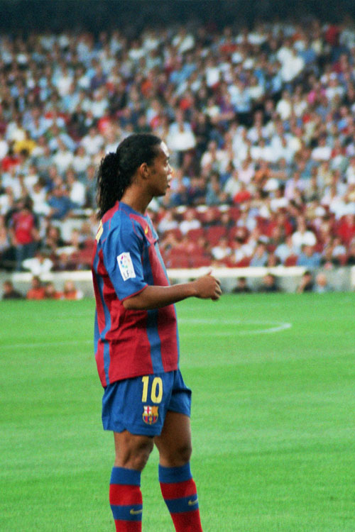

Ronaldinho Gaúcho ocupa um lugar especial não só na história do futebol, mas como dentro do esporte em geral. Mais do que um jogador vitorioso, o "Bruxo" se tornou um símbolo da criatividade, da improvisação e da alegria dentro de campo. Em seu auge, parecia capaz de encontrar soluções que não existiam até a bola chegar aos seus pés.
Com dribles desconcertantes, passes sem olhar, cobranças de falta precisas e uma relação quase artística com a bola, Ronaldinho encantou torcedores no Brasil, na França, na Espanha, na Itália e no México, pelas equipes que defendeu, mas seu talento fazia com que torcidas de todos os países o admirassem. Foi protagonista da Seleção Brasileira campeã Penta Campeã e liderou o Barcelona em uma das transformações mais importantes da história recente do clube.
A carreira reuniu conquistas individuais e coletivas de enorme peso. Ronaldinho venceu a Bola de Ouro, foi eleito duas vezes o melhor jogador do mundo pela Fifa e entrou para o grupo de atletas campeões dos principais torneios de clubes da Europa e da América do Sul.
O início no Grêmio
Ronaldo de Assis Moreira nasceu em 21 de março de 1980, em Porto Alegre. Criado em uma família ligada ao futebol, recebeu forte influência do pai, e do irmão mais velho, Roberto de Assis, que também foi jogador profissional e teve participação importante na condução de sua carreira.
O apelido Ronaldinho surgiu ainda nas categorias de base. Como era mais novo e menor do que muitos companheiros, passou a ser chamado pelo diminutivo. A identificação “Gaúcho” ganhou força posteriormente, especialmente no cenário internacional, para diferenciá-lo de Ronaldo Nazário.
Ele começou a chamar atenção nacional e internacional ainda muito jovem. Habilidoso, rápido e imprevisível, destacou-se nas categorias de base do clube e também nas seleções brasileiras inferiores. Sua atuação no Mundial Sub-17 de 1997, conquistado pelo Brasil, ajudou a apresentá-lo ao público.
A estreia no time profissional do Grêmio ocorreu em 1998. Ronaldinho rapidamente assumiu o papel de principal referência técnica. Um dos episódios mais lembrados aconteceu na final do Campeonato Gaúcho de 1999, quando protagonizou grandes lances contra o Internacional e aplicou dribles marcantes sobre Dunga, então uma das principais referências do rival.
Ainda em 1999, conquistou o Campeonato Gaúcho e a Copa Sul. Mais importante do que os troféus, porém, foi a impressão deixada: o futebol brasileiro tinha revelado um jogador diferente, capaz de decidir partidas e transformar cada participação em uma possibilidade de espetáculo.
De joia da base a “persona non grata”
A história de Ronaldinho Gaúcho com o Grêmio é uma das relações mais contraditórias do futebol brasileiro. Foi no clube que ele cresceu, estreou como profissional e apresentou ao país o repertório que mais tarde encantaria o mundo. Apesar disso, o Tricolor é justamente o lugar onde uma parcela expressiva da torcida rejeita o rótulo de ídolo e ainda trata o ex-jogador como “persona non grata”.
A ruptura começou em 2001, quando Ronaldinho deixou o Grêmio para defender o PSG após o término de seu contrato. Amparado pelas mudanças introduzidas pela Lei Pelé, que extinguiu o antigo sistema do passe e ampliou a liberdade dos jogadores ao fim do vínculo, o craque acertou com o clube francês sem que o Grêmio recebesse, naquele momento, uma taxa convencional de transferência. A diretoria considerava que estava perdendo gratuitamente seu principal patrimônio esportivo e iniciou uma longa disputa contra o jogador e o PSG. O clube gaúcho só seria compensado em 2002, quando os franceses pagaram US$ 4,2 milhões em um acordo para encerrar o conflito — quantia muito inferior aos valores que o Grêmio acreditava que Ronaldinho poderia render no mercado. Para muitos torcedores, a maneira como a saída foi conduzida prejudicou a instituição que havia formado e projetado o atleta, criando uma ferida profunda na relação entre o craque, clube e torcida.
Dez anos depois, surgiu a oportunidade de reconciliação. No início de 2011, Ronaldinho negociou seu retorno ao futebol brasileiro, e o Grêmio acreditou que estava próximo de repatriar o craque. A diretoria preparou o Estádio Olímpico para uma grande apresentação e chegou a instalar caixas de som no gramado. O acordo, entretanto, não foi concluído. O jogador permaneceu no Rio de Janeiro e acabou anunciado pelo Flamengo, enquanto os equipamentos montados para a festa eram retirados do estádio gremista.
A negociação frustrada transformou a mágoa antiga em rejeição aberta. Torcedores exibiram faixas contra Ronaldinho e seu irmão e empresário, Roberto Assis, e a imagem das caixas de som sendo retiradas tornou-se o símbolo definitivo do rompimento. Na visão de muitos gremistas, o jogador teve a oportunidade de reconstruir sua história com o clube que o revelou, mas escolheu outro caminho.
Ronaldinho sempre demonstrou carinho pelo Grêmio e já afirmou publicamente que continuava torcendo pelo clube. Isso, porém, nunca foi suficiente para eliminar completamente a resistência da torcida. Seu talento com a camisa tricolor é reconhecido, assim como a importância do Grêmio em sua formação, mas idolatria não depende apenas da qualidade técnica. Para a torcida, envolve identificação, lealdade e a forma como o jogador se relaciona com a instituição nos momentos decisivos.
Por isso, Ronaldinho vive uma situação única entre os clubes mais importantes de sua carreira. É celebrado mundialmente pelo Barcelona, respeitado pelo Milan, lembrado pelo Flamengo e tratado como um dos grandes símbolos do Atlético-MG campeão da Libertadores. No Grêmio, onde tudo começou, permanece como um craque formado em casa, mas não como um ídolo consensual. A relação ficou presa entre o orgulho de ter revelado um gênio e a mágoa pela maneira como ele partiu — e, principalmente, pela volta que nunca aconteceu.
A chegada à Seleção Brasileira
O talento demonstrado no Grêmio levou Ronaldinho rapidamente à vestir a "amarelinha" principal. Em 1999, ele participou da campanha do título da Copa América, disputada no Paraguai.
Naquele período, um gol contra a Venezuela ganhou enorme repercussão. Ronaldinho recebeu a bola próximo à área, aplicou um chapéu no marcador e concluiu para o gol. O lance combinava habilidade, confiança e espontaneidade, características que acompanhariam toda a sua carreira.
Veja o gol abaixo:
O atacante também integrou o elenco que disputou a Copa das Confederações de 1999. Apesar do vice-campeonato brasileiro, terminou o torneio como um dos grandes destaques ofensivos e mostrou que poderia ocupar espaço importante na renovação da Seleção.
A passagem pela França
Após deixar o Grêmio em uma transferência marcada por disputas jurídicas e administrativas, Ronaldinho iniciou sua trajetória europeia no Paris Saint-Germain, em 2001.
Na clube francês, alternou momentos de brilho com períodos de instabilidade coletiva. O PSG não vivia a estrutura esportiva e financeira que teria anos depois, mas Ronaldinho conseguiu produzir atuações memoráveis. Seus dribles, arrancadas e gols contra adversários importantes aumentaram sua reputação no futebol europeu.
O período em Paris também foi fundamental para sua adaptação. Ronaldinho passou a enfrentar marcações mais físicas, calendários exigentes e diferentes modelos táticos. Mesmo sem conquistar um grande título pelo clube francês, saiu valorizado e pronto para o salto que mudaria definitivamente sua carreira.
Copa do Mundo de 2002
O Mundial, realizado na Coreia do Sul e no Japão, o colocou no centro do futebol mundial. O Brasil chegou ao torneio cercado por dúvidas após uma campanha irregular nas Eliminatórias, mas encontrou força em um ataque formado por Ronaldo, Rivaldo e Ronaldinho.
O trio, conhecido como “Três Rs”, foi decisivo na conquista do pentacampeonato. Ronaldinho atuava com liberdade para criar, conduzir a bola e aproximar o meio-campo dos dois principais finalizadores.
Nas quartas de final contra a Inglaterra, ele participou diretamente dos dois gols da vitória brasileira por 2 a 1. Primeiro, arrancou pelo meio e serviu Rivaldo, que empatou a partida. Depois, marcou um dos gols mais famosos das Copas do Mundo ao cobrar uma falta de longa distância e encobrir o goleiro David Seaman.
Ronaldinho ainda foi expulso no segundo tempo, mas o Brasil sustentou o resultado e avançou. Depois de superar a Turquia na semifinal, a Seleção venceu a Alemanha por 2 a 0 na decisão, com dois gols de Ronaldo, e conquistou o quinto título mundial.
A Copa de 2002 consolidou Ronaldinho como estrela internacional. Aos 22 anos, ele já era campeão do mundo e carregava uma atuação histórica em um dos confrontos mais importantes daquela campanha.
O auge na Espanha
Em 2003, Ronaldinho foi contratado pelo Barcelona. O clube catalão vivia uma fase de reconstrução, acumulava temporadas sem vencer o Campeonato Espanhol e precisava recuperar o protagonismo nacional e internacional.
A chegada do brasileiro mudou o ambiente. Ronaldinho tornou-se o centro técnico da equipe e ajudou a devolver confiança ao clube. Seu futebol reunia eficiência e entretenimento: ele criava jogadas, marcava gols, cobrava faltas, dava assistências e mantinha uma conexão imediata com as arquibancadas.
Ao lado de jogadores como Samuel Eto’o, Deco, Xavi, Carles Puyol, Andrés Iniesta e do jovem Lionel Messi, Ronaldinho liderou uma geração que recolocou o Barcelona entre as maiores forças do mundo.
O primeiro título espanhol veio na temporada 2004/05. Na campanha seguinte, o Barcelona voltou a vencer La Liga e conquistou a Champions League de 2005/06. Na final europeia, disputada em Paris, o time catalão derrotou o Arsenal por 2 a 1.
O brasileiro viveu no clube o período mais brilhante de sua carreira. Em 2004 e 2005, foi escolhido pela Fifa como o melhor jogador do mundo. Em 2005, recebeu a Bola de Ouro, tradicional prêmio entregue ao principal atleta da temporada.
Entre seus grandes momentos está a atuação contra o Real Madrid no estádio Santiago Bernabéu, em novembro de 2005. Ronaldinho marcou dois gols na vitória por 3 a 0 e foi aplaudido por parte da torcida adversária, uma manifestação rara em um dos clássicos mais intensos do futebol mundial.
No Barcelona, também participou de uma mudança cultural e esportiva que seria ampliada nos anos seguintes. Sua trajetória está diretamente relacionada à reconstrução do clube e à mística do Camp Nou, palco de algumas das exibições mais marcantes do brasileiro.
A relação com Lionel Messi
Ronaldinho teve importância especial no início da carreira profissional do craque argentino. Quando ele começou a receber oportunidades no time principal, o brasileiro já era a maior estrela do Barcelona.
Além da convivência fora de campo, os dois construíram uma conexão técnica imediata. Foi de Ronaldinho o passe para o primeiro gol de Messi pela equipe profissional do Barça, em maio de 2005, contra o Albacete. O brasileiro encontrou o companheiro com um toque por cobertura, e Messi concluiu por cima do goleiro.
O episódio tornou-se simbólico porque reuniu duas eras do clube. Ronaldinho era o melhor jogador do mundo daquele momento, enquanto Messi começava a trajetória que o colocaria entre os maiores atletas da história.
Mesmo depois de deixar o Barcelona, Ronaldinho sempre foi tratado com respeito e carinho por Messi. A relação entre eles ajuda a explicar o papel do brasileiro não apenas como protagonista, mas também como referência para a geração seguinte.
A conquista do Campeonato Italiano
Ronaldinho deixou o Barcelona em 2008 e acertou com o Milan. Na Itália, passou a atuar em um campeonato marcado por forte disciplina tática e sistemas defensivos organizados.
Embora já não tivesse a mesma explosão física do auge na Espanha, o brasileiro continuou produzindo futebol de alto nível. Sua visão de jogo, qualidade nos passes e capacidade de decidir em cobranças de falta permaneceram como armas importantes.
Na temporada 2009/10, foi um dos grandes criadores do Milan e terminou a competição italiana entre os principais garçons. Na campanha seguinte, participou do elenco campeão da Serie A de 2010/11, embora tenha retornado ao Brasil antes do encerramento oficial da temporada.
A volta ao futebol brasileiro
Em janeiro de 2011, Ronaldinho retornou ao Brasil para defender o Flamengo. Sua contratação provocou grande mobilização popular e comercial. O principal título conquistado foi o Campeonato Carioca de 2011, de forma invicta.
A passagem pelo clube também teve jogos inesquecíveis. O maior deles aconteceu contra o Santos, na Vila Belmiro, pelo Campeonato Brasileiro de 2011. Em uma partida histórica, o Flamengo venceu por 5 a 4 depois de estar perdendo por 3 a 0. Ronaldinho marcou três gols e liderou a reação diante do time de Neymar.
Apesar dos grandes momentos, a relação com o Flamengo terminou em 2012, após problemas financeiros e uma disputa judicial.
A conquista da América
Pouco depois de deixar o Flamengo, Ronaldinho acertou com o Atlético-MG. A chegada foi cercada por desconfiança, mas o brasileiro transformou rapidamente o cenário.
Sob o comando de Cuca, tornou-se o principal articulador de uma equipe ofensiva, competitiva e emocionalmente conectada à torcida. Em 2012, o Atlético disputou o título brasileiro terminando a competição na segunda colocação.
O grande momento veio em 2013. Liderado por Ronaldinho, o clube conquistou pela primeira vez a Copa Libertadores. A campanha teve viradas, decisões nos pênaltis e partidas dramáticas no Independência.
Ronaldinho não era apenas a referência técnica. Sua experiência, personalidade e capacidade de criar jogadas foram essenciais para que o Atlético acreditasse na recuperação em momentos críticos.
Em 2014, ainda conquistou a Recopa Sul-Americana e o Campeonato Mineiro pelo clube. A passagem por Belo Horizonte fortaleceu sua imagem no futebol brasileiro e mostrou que ele ainda poderia ser protagonista de uma conquista continental.
Os últimos clubes da carreira
Depois do Atlético-MG, atuou pelo Querétaro, do México. Mesmo em uma passagem curta, ajudou o clube a chegar à final do Torneio Clausura de 2015. Também recebeu homenagens de torcedores adversários, repetindo no futebol mexicano o reconhecimento conquistado em outros países.
Seu último clube profissional foi o Fluminense, também em 2015. A passagem terminou após poucos jogos e sem o impacto esperado.
Nos anos seguintes, Ronaldinho participou de amistosos, partidas festivas e eventos promocionais. A aposentadoria foi confirmada oficialmente em 2018, encerrando uma carreira profissional iniciada duas décadas antes.
Gols e assistências por clube
Os números abaixo seguem o recorte de partidas oficiais em competições reconhecidas.
- Grêmio — 125 jogos e 58 gols.
- Paris Saint-Germain — 77 jogos, 25 gols e 18 assistências.
- Barcelona — 207 jogos e 94 gols.
- Milan — 95 jogos, 26 gols e 29 assistências.
- Flamengo — 72 jogos, 28 gols e 17 assistências.
- Atlético-MG — 88 jogos e 28 gols e 32 assistências.
- Querétaro — 29 jogos, oito gols e oito assistências.
- Fluminense — nove jogos, sem gols ou assistências.
- Total por clubes — 266 gols em 699 partidas oficiais.
- Seleção Brasileira principal — 33 gols em 97 partidas.
- Total por clubes e Seleção Brasileira principal — 299 gols.
Principais títulos conquistados
Seleção Brasileira:
- Copa do Mundo: 2002
- Copa América: 1999
- Copa das Confederações: 2005
- Mundial Sub-17: 1997
Barcelona:
- Champions League: 2005/06
- Campeonato Espanhol: 2004/05 e 2005/06
- Supercopa da Espanha: 2005 e 2006
Milan:
- Campeonato Italiano: 2010/11
Atlético-MG:
- Copa Libertadores: 2013
- Recopa Sul-Americana: 2014
- Campeonato Mineiro: 2013
Flamengo:
- Campeonato Carioca: 2011
Grêmio:
- Campeonato Gaúcho: 1999
- Copa Sul: 1999
Prêmios individuais e reconhecimento mundial
Ronaldinho acumulou algumas das maiores premiações individuais do futebol. Foi eleito o melhor jogador do mundo pela Fifa em 2004 e 2005 e conquistou a Bola de Ouro em 2005.
Também recebeu reconhecimentos da Uefa e integrou seleções ideais de diferentes competições. Em 2004, foi incluído por Pelé na lista FIFA 100, que reuniu grandes jogadores vivos escolhidos como parte das comemorações do centenário da entidade.
Os prêmios refletem o auge alcançado entre a Copa do Mundo de 2002 e a conquista da Champions League de 2006. Durante esse período, Ronaldinho foi tratado como o principal jogador do planeta e tornou-se uma das figuras mais populares do esporte mundial.
O estilo de jogo
Ronaldinho atuou como meia-atacante, ponta e segundo atacante. Sua principal característica era a liberdade criativa. Podia receber aberto pela esquerda, avançar pelo centro ou recuar para organizar a construção das jogadas.
O domínio de bola permitia que executasse movimentos em espaços curtos. Usava dribles de corpo, elásticos, chapéus, canetas e mudanças bruscas de direção para superar os marcadores. Entretanto, reduzir seu futebol aos dribles seria ignorar uma parte essencial de sua qualidade.
Ronaldinho era um passador extraordinário. Enxergava movimentos antes que eles se tornassem evidentes e conseguia encontrar companheiros com lançamentos, toques de primeira e passes sem olhar. Também era perigoso nas cobranças de falta, nos pênaltis e nos chutes de média distância.
Outro traço marcante era a forma como parecia se divertir durante as partidas. O sorriso tornou-se parte de sua imagem, transmitindo uma leveza rara em um ambiente de enorme pressão competitiva.
Veja alguns momentos da carreira dele abaixo:
O legado deixado
Ronaldinho Gaúcho não teve a carreira mais longa entre os grandes craques do futebol, mas alcançou um nível técnico que poucos jogadores conseguiram atingir. Em seu auge, combinou protagonismo, títulos e espetáculo.
Sua influência ultrapassou os clubes que defendeu. Crianças passaram a imitar seus dribles, jogadores profissionais incorporaram movimentos popularizados por ele e torcedores de diferentes países criaram uma identificação que resistiu ao fim da carreira.
Ronaldinho também ajudou a reforçar uma imagem tradicional do futebol brasileiro: a do jogador criativo, ousado e capaz de tratar a bola como instrumento de arte. Nesse sentido, sua história dialoga com a de outros grandes atacantes do país, como Romário chegando no milésimo gol.
Campeão da Copa do Mundo, da Champions League e da Libertadores, venceu nos dois principais centros do futebol de clubes e deixou momentos inesquecíveis com a camisa do Brasil. Poucos jogadores reuniram um currículo tão completo e, ao mesmo tempo, uma coleção tão extensa de lances que continuam sendo vistos e compartilhados anos depois.
O tempo encerrou sua trajetória profissional, mas não diminuiu o encanto provocado por seu futebol. Ronaldinho permanece como um dos maiores gênios que o esporte produziu: um craque que conquistou taças, mudou a história de clubes e fez milhões de pessoas sorrirem apenas ao tocar na bola.